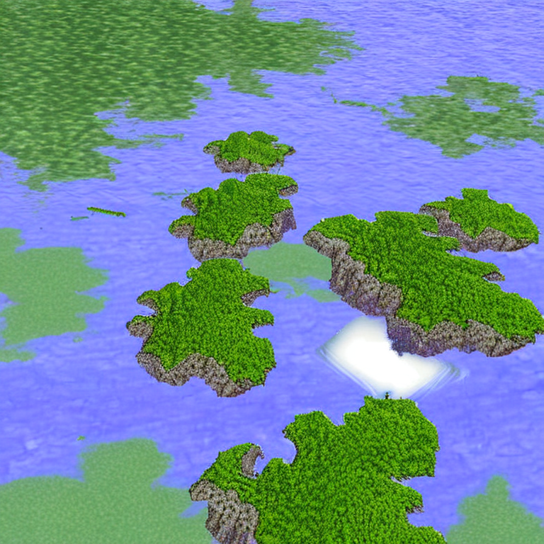
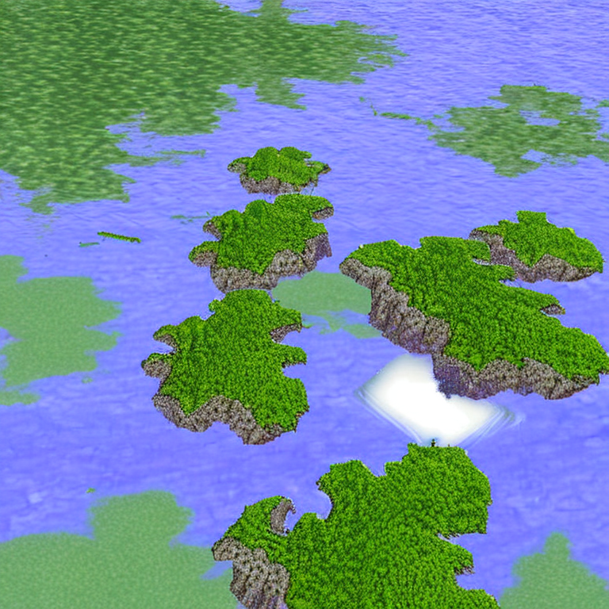


 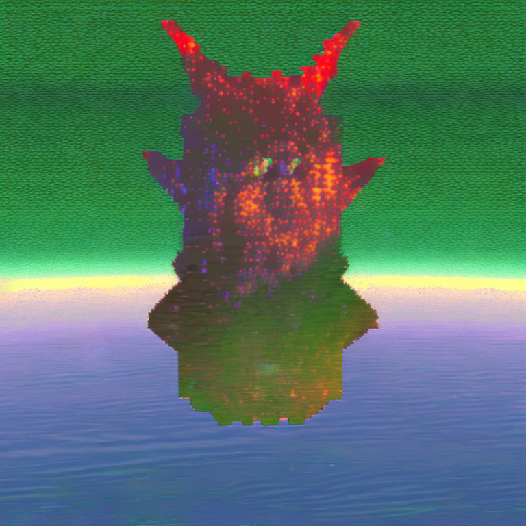
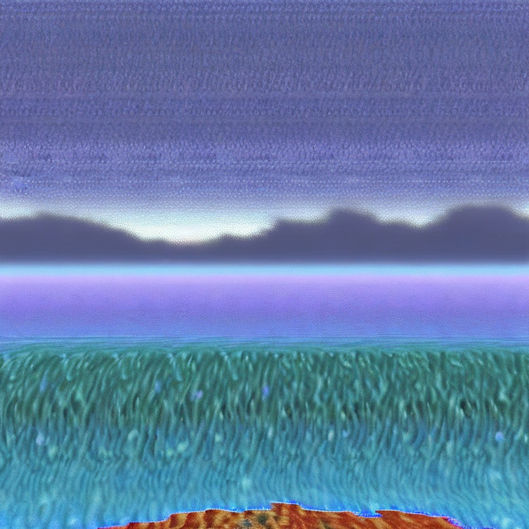
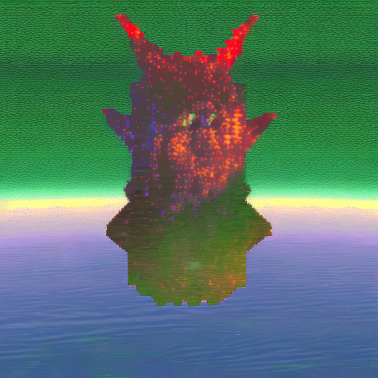
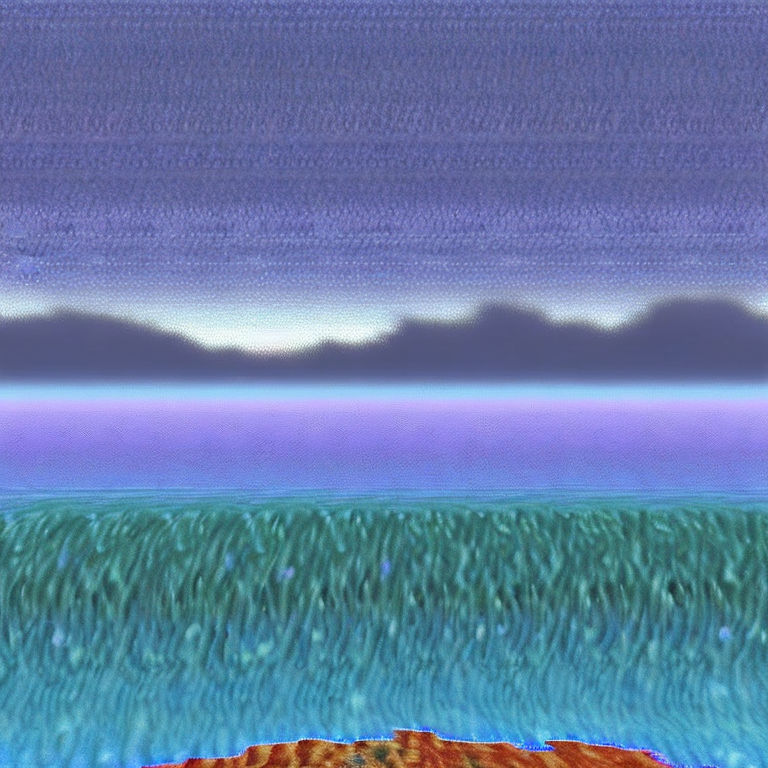


 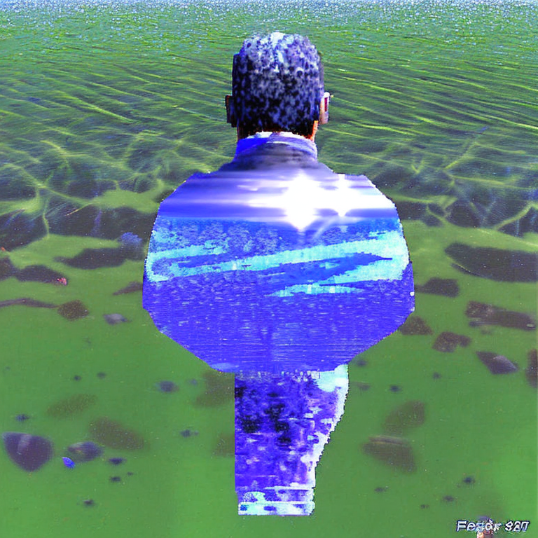
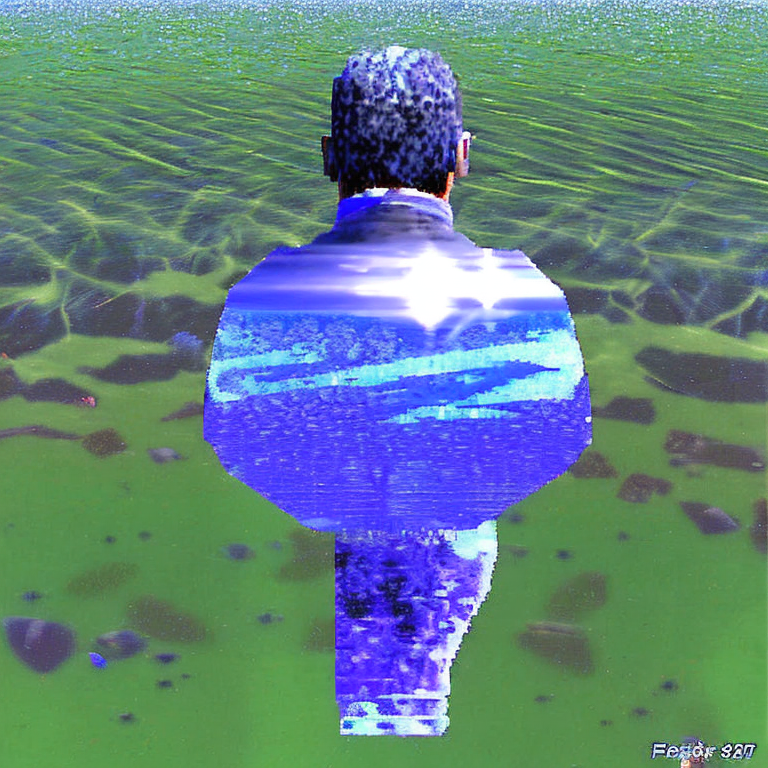

The concept / model below was trained on images of digital images and video still created and chosen by a collaborating Bay Area visual artist / musician. The concept showed an aptitude for being combined with other concepts, which can be done freely in the application linked above.
model documentation
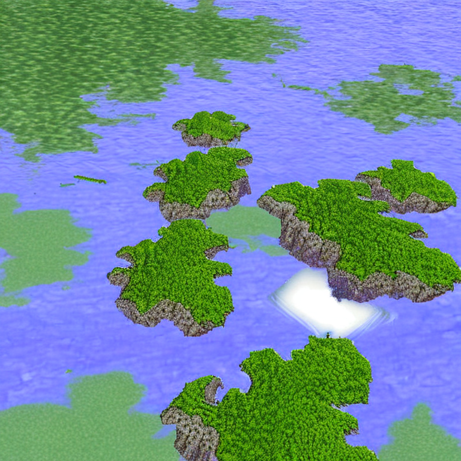
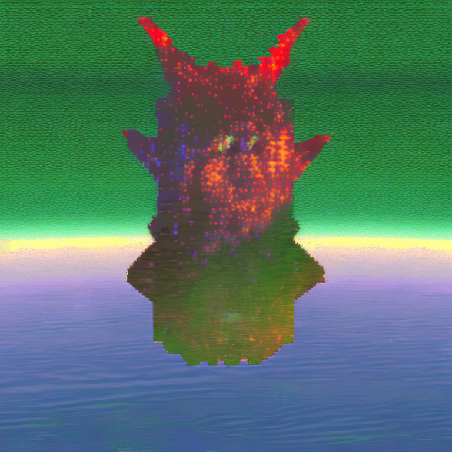
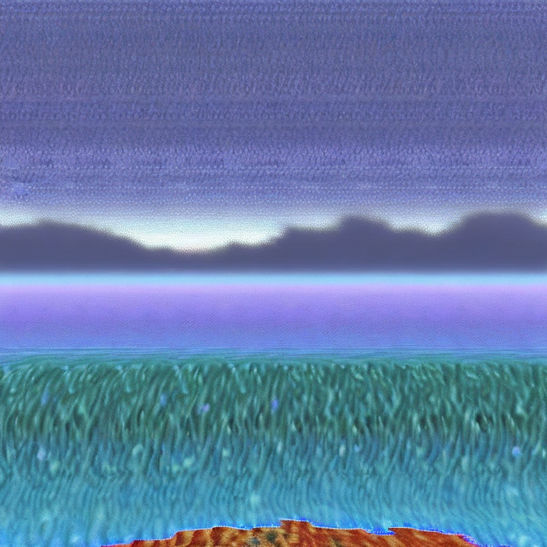
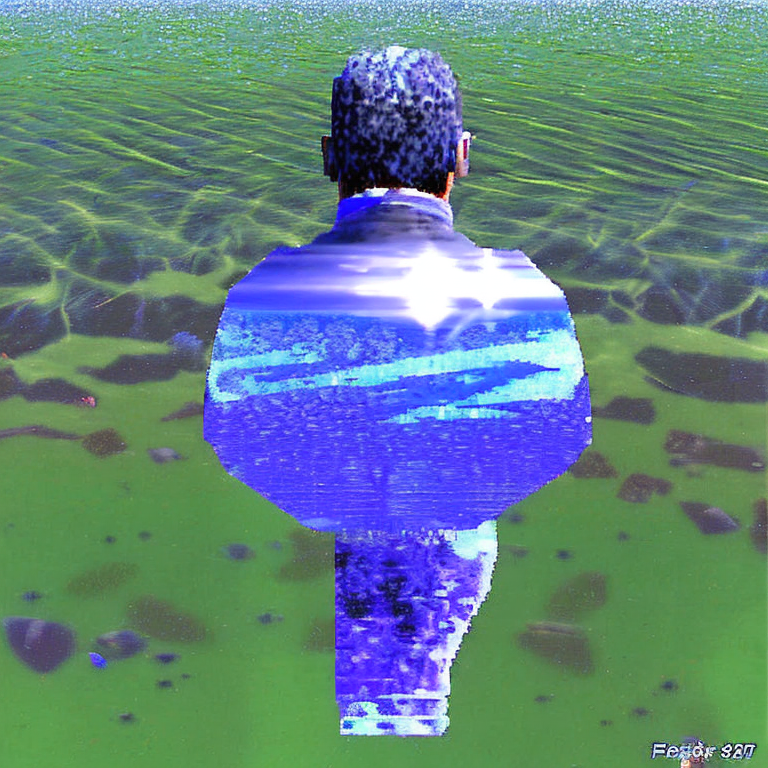
more images available on discord